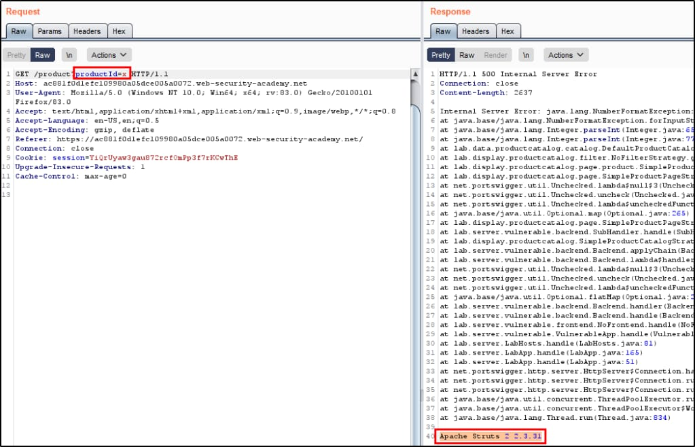
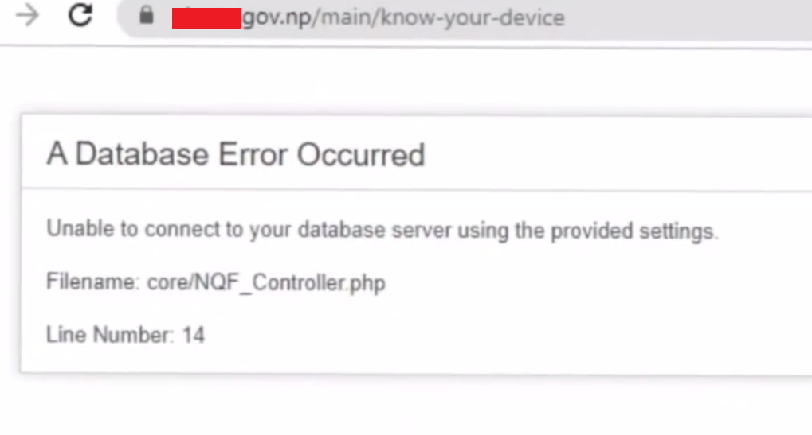

Sensitive Data Exposure
- Use encoded characters in parameter values For example, you could encode the characters "admin" as "%61%64%6D%69%6E" or double encoding or encode symbols. This may cause the server to return an error message revealing sensitive information.
- Use long parameter values Some servers may have a limit on the length of parameter values. If you exceed this limit, the server may return an error message that contains the sensitive information.
- Use invalid parameter values Some servers may not handle invalid parameter values correctly. If you provide an invalid parameter value, the server may return an error message that contains information.
- Use multiple parameter values Some servers may allow you to specify multiple values for a single parameter. If you provide multiple values, the server may return an error message that contains a list of the values that were provided. This could reveal sensitive information, such as a list of usernames or passwords.
- Use multiple parameters Some servers may allow you to specify multiple parameters. If you provide multiple parameters, the server may return error.
- Use a combination of techniques You can combine multiple techniques to increase the likelihood of triggering an error that contains sensitive information. For example, you could use encoded characters in parameter values and also use long parameter values.
- Data Classification and Encryption Classify data and encrypt it in transit and at rest to protect sensitive information. Use HTTPS instead of HTTP.
- Access Controls Implement strict access controls to limit data access to authorized users and roles.
- Secure Coding Practices Follow secure coding practices to prevent common vulnerabilities that could lead to data exposure or cryptographic weaknesses.
- Key Management Implement strong key management practices for secure encryption and cryptographic operations.
- Data Masking/Redaction Mask or redact sensitive data in non-production environments to reduce exposure during development and testing.
- Regular Updates and Patching Keep software components, cryptographic libraries, and systems up-to-date with the latest security patches.
- web application firewall A WAF can help to block attacks that attempt to exploit vulnerabilities in web applications.
- Monitoring and Alerts Implement monitoring and alerting systems to detect and respond to suspicious cryptographic activities and data exposure.
- Sensitive data exposure or Information Disclosure, which is later referred to as or combines with cryptographic failures, represents a security vulnerability where confidential or private information is inadvertently or improperly disclosed to unauthorized parties due to various factors, including poor security practices, misconfigured systems, or inadequate access controls. This exposure not only jeopardizes the confidentiality and integrity of sensitive data but also poses significant risks such as data breaches, identity theft, financial fraud, and legal consequences.
- Information disclosure is not always exploitable, but it can reveal valuable insights to hackers, allowing them to fine-tune their attacks and discover vulnerabilities. It can lead to attack surface enumeration, easier attack vector discovery, credential theft, social engineering, reconnaissance, and system manipulation.
In the context of cryptographic failures, sensitive data exposure is closely related. Cryptographic failures specifically point to weaknesses or flaws in the encryption and protection mechanisms used to safeguard sensitive data. When cryptographic measures are not implemented correctly, it can lead to sensitive data exposure. For example, inadequate encryption algorithms, weak ciphers, and poor key management can all contribute to data being exposed due to cryptographic failures.
1. Google Dorking
- Google Dorking, which involves crafting specialized search queries to uncover specific content on the internet, can play a pivotal role in information disclosure and sensitive data exposure. By tailoring search queries, malicious actors or security researchers can pinpoint websites or web applications that may inadvertently reveal sensitive information. For instance, they can identify websites with misconfigured security settings, exposed directories, or improperly protected documents. This can lead to the unintended exposure of confidential data such as configuration files, user credentials, financial records, and more.
- Manual Approach The manual approach for finding sensitive information through Google Dorks involves crafting specific search queries to uncover potentially exposed data on the internet. You define your search goal, create targeted queries, use advanced search operators, and analyze the search results, looking for sensitive information. Below are some list of useful dorks with their output, but those are not limited and you can craft your own dorks.
inurl:/phpMyAdmin/index.php?server=1 inurl:node_modules/ua-parser-js index of /wp-admin.jpg site:bd phpMyAdmin SQL Dump ext:txt
- The Google Hacking Database (GHDB) and this website is a collection of Google search queries that can be used to uncover sensitive information and information disclosure vulnerabilities. These queries are designed to help security professionals, ethical hackers, and penetration testers identify potentially exposed data on the internet.
- Automatic Approach The automatic approach involves using specialized tools or scripts that automate the process of searching for sensitive information using predefined Google Dorks. These tools can quickly scan large portions of the internet for potential data exposure.
- Tools that can help you are pagodo, FGDS, etc that are open source on github. Although you can design your own tool and can inform us we will list your tool in this page only if it is beneficial.
- Credit @HackerSploit
2. Github Dorking
- GitHub dorking, a specialized search technique for GitHub repositories, can help find sensitive information or information disclosure by identifying exposed configuration files, authentication tokens, private repository metadata, source code vulnerabilities, sensitive documentation, API endpoints, and username enumeration. It's essential to use this approach responsibly, respecting privacy and security, and to report any security issues found to the repository owners rather than engaging in unauthorized access or misuse of the discovered data.
- Manual Approach Manually searching for sensitive information or information disclosure on GitHub involves using specific search queries within the GitHub platform. You can visit GitHub and utilize the search bar to enter dork-like queries with operators that target specific file types, keywords, or patterns. For example, you can search for configuration files, API keys, or other sensitive data by specifying relevant terms and filtering for specific repositories or code snippets. Below are list of some dorks but those are just tip of iceberg and you can design your own dorks.
"api_hash" "api_id" path:*.php db_connect "testphp.vulnweb.com" password "company.com" token
- Automatic Approach The automatic approach for GitHub dorking relies on specialized tools or scripts designed to automate the process of searching GitHub repositories for sensitive information or information disclosure. These tools leverage the GitHub API to perform more extensive and systematic searches. They can scan a vast number of repositories quickly and provide detailed results.
- Examples of such tools include TruffleHog, GitRob, GitDorker and Gitleaks, etc. These all are publicly available on github
- Credit @BugCrowd
3. Find Sensitive Data Manually
1. Web Crawler Files
- Web crawlers are automated programs that systematically browse the web to collect data from websites. Web crawler files can potentially help identify sensitive information and information disclosure in various ways.
- Identifying hidden files and directories Web crawlers can be used to identify hidden files and directories that may contain sensitive information. This information can include passwords, credit card numbers, and other sensitive data. Crawlers can also be used to identify files that are not linked to from any other pages on the website, which may indicate that they contain sensitive information.
//robots.txt file may contain User-agent: * Disallow: /private/ Disallow: /admin-panel67/ Disallow: /sensitive-data.txt //sitemap.xml file may contain <?xml version="1.0" encoding="UTF-8"?> <url> <loc>http://www.ex.com/pvt-data.html</loc> <lastmod>2023-11-08</lastmod> <changefreq>weekly</changefreq> <priority>0.8</priority> </url> <url> <loc>http://www.ex.com/secret.htm</loc> <lastmod>2023-11-08</lastmod> <changefreq>monthly</changefreq> <priority>0.6</priority> </url> </urlset>
- Testing for directory listing Web crawlers can be used to test for directory listing vulnerabilities. These vulnerabilities occur when a web server allows users to list the contents of a directory without proper authorization. This can expose sensitive files that are not intended to be publicly accessible.
User-agent: * Disallow: /ftp/ Disallow: /css/ Disallow: /images/
- Investigating API endpoints Web crawlers can be used to investigate API endpoints. APIs are interfaces that allow software applications to communicate with each other. Poorly secured APIs can expose sensitive data or allow unauthorized access to systems.
User-agent: * Disallow: /api/ Disallow: /api/v1/users/ Disallow: /api/v1/login/
- Examining URL structures Web crawlers can also be used to examine URL structures. This can reveal information about the website's data storage patterns or authentication mechanisms, which can be used to identify potential security vulnerabilities.
User-agent: * Disallow: /search?q= Disallow: /*?param1=&pparam2= Disallow: /*?category=
- Using Web Archive You can use web archive for finding old contents of web crawler files. For example your search for https://example.com/robots.txt in web archive and then look at its old content. You may find some sensitive page that is removed from that in present web crawler but still exist and not changed.
// old robots.txt find in web archive User-agent: * Disallow: /category/ Disallow: /admin-panel-269 Disallow: /search?q= // new robots.txt present in website User-agent: * Disallow: /category/ Disallow: /search?q=

2. Directory Listing
- Directory listing is a feature of web servers that allows users to view a list of files and directories on the server. This can be useful for finding files that are not linked to from any web pages, or for finding hidden files and directories. However, directory listing can also be a security risk, as it can allow attackers to see what files are on the server and potentially exploit vulnerabilities in the server software.
- Using Google dorks Google dorks are special search queries that can be used to find sensitive information on websites. Some Google Dorks that can be used to find directory listings include:
inurl:example.com intitle:"index of" inurl:example.com intitle:"index of /" "*key.pem" inurl:example.com ext:log inurl:example.com intitle:"index of" ext:sql|xls|xml|json|csv inurl:example.com "MYSQL_ROOT_PASSWORD:" ext:env OR ext:yml -git inurl:example.com intitle:"index of" "config.db" inurl:example.com allintext:"API_SECRET*" ext:env | ext:yml inurl:example.com intext:admin ext:sql inurl:admin inurl:example.com allintext:username,password filetype:log
- Using Web Crawler Files Web crawler Files can be useful for finding directory listing, or for finding hidden files and directories.
User-agent: * Disallow: /ssh/ Disallow: /assets/ Disallow: /user/list/
- Through Web Browsers Using a web browser to access a directory that does not exist. If the servear is configured to allow directory listing, the browser will display a list of the files and directories in that directory.
- When you visit a directory that does not exist on a web server, the server will typically return a 404 error page. This page will usually contain a message indicating that the directory does not exist. However, some web servers are configured to allow directory listing, even for directories that do not exist. When directory listing is enabled, the server will generate a list of the files and directories in the parent directory of the requested directory. This list will be displayed in a web page, which will be returned to the user.
Index of / Name Last Size index.html 2023-03-08 12:00:00 1024 bytes about.html 2023-03-08 12:00:00 512 bytes contact.html 2023-03-08 12:00:00 256 bytes
- Using httpx tool I know it is kind automatic approach but it's important to mention here. The command "cat live.txt | httpx -td -title" is used to find directory listings on a web server. The command takes a list of live subdomains from a file called "live.txt" and then uses the httpx tool to scan each subdomain for directory listings. The "-td" flag tells httpx to only display the title of each directory listing, and the "-title" flag tells httpx to only display the title of each web page.
cat live.txt | httpx -td -title
3. Developer Comments
- Developer comments in source code or configuration files can sometimes inadvertently reveal sensitive information and contribute to information disclosure or data exposure. These comments, while intended to provide context and documentation, can be overlooked or not properly sanitized, leading to security risks. It can reveal information like API keys, path or file disclosure, system information/version or credentials, etc.
- Manual Code Review Review HTML, CSS, and JavaScript files manually, looking for comments within the code. You can click ctrl+f and search for // or /* or <!-- so you can find comments directly.
<!DOCTYPE html> <html> <head> <title>My Vulnerable Website <!-- Running on PHP 5.6.30 - Consider upgrading for security. --> </title> </head> <body> <!-- The password for the admin panel is 'admin@784'. --> <div id="content"> <!-- Include the API key here for access: '9876543210zyxwvu' --> <!-- File path for sensitive data: /var/www/html/secrets/passwords.txt --> <!-- TODO: Implement user authentication --> <script src="/path/to/old-library.js"> <!-- Some sensitive debug information --> <!-- Debug: Disable this on the production server --> </div> </body> </html>
- Using Version Control System Version Control Systems (VCS) are software tools that help developers track changes in their codebase over time. They allow developers to manage different versions of their source code and collaborate effectively. In the context of developer comments, version control systems store the history of code changes, including comments, enabling developers to view, compare, and recover older versions of code, including comments that may have been removed or modified.
- Require More information so put message in contact us box.
4. Error Messages
- Improper Error Handling can be a valuable source of information for attackers. They can reveal the inner workings of a system, including the technologies used, the software versions, and the configuration settings. It occurs when an application or website provides error messages that reveal more information than they should. This information can be used to identify vulnerabilities that can be exploited to gain access to the system or to steal sensitive data.
- Here are some known places where error message can be be seen.

- Error Pages When a website encounters a critical error, it may redirect users to a dedicated error page (e.g., a 404, 403, etc). These pages often include error messages and can include sensitive information like database error, path or version disclosure, stack traces, etc.
- Form Fields: When users submit forms on websites, error messages related to form validation (e.g., missing required fields, version disclosure, descriptive error, etc) can appear and exposure sensitive information. It is not important that is should be login or signup but can be forgot password, newsletter, contact us, deleting account, feedback, review writing, etc.

- Server Responses It can also give error in it's body including sensitive or not required information which later can be used by attacker to steal information or to gain unauthorized access. We can try put invalid things in request and see the response containing error or it contain extra information like if we ask for username so it also provide its email or id in response.

- Normal Pages Normal pages like blogs, search box, contact us, etc can also provide sensitive information at the time of encountering error messages that may reveal sensitive data. It can reveal information like connection failed or if attacker ty to put some invalid text or encoded information so it can show different type of errors.
console.log("Error: " + error.message.replace(/password|credit card number|social security number/gi, "*****"));
- The browser's console The browser's console is a tool that allows you to view error messages and other information about the website. To open the console, press Ctrl+Shift+J (Windows) or Command+Option+J (Mac).
- Here are some ways in which error messages can be used for information disclosure
Error: An error occurred while processing your request. Stack trace: at /home/user/public_html/index.php:123 at /home/user/public_html/functions.php:456 at /home/user/public_html/config.php:1011 at /home/user/public_html/index.php:1
- Stack Traces or Debugging Information Error messages that include detailed stack traces or debugging information can reveal internal code and server details. A stack trace is a list of the functions that were called leading up to an error. It can be used to identify the source of the error and to debug the code. This type of error can be also seen in the browser console.
Error: Could not find file /www/html/home/user/secret.txt
- Path Disclosure Some error messages may disclose file paths or directory structures on the server. In above error it tell that it could not find secret.txt but it disclosure full path.
Error: SQLSTATE[HY000]: General error: 1064 You have an error in your SQL syntax; check the manual that corresponds to your MySQL server version for the right syntax to use near 'WHERE name = 'John'' at line 1
- Database Errors Errors related to database operations might expose SQL queries, table names, or database connection details. This information can be used to craft SQL injection attacks.
"The username johndoe does not exist." "The password for the username johndoe is incorrect." "The username johndoe is locked." "The username johndoe has been disabled."
- Credential Confirmation In certain cases, login error messages may disclose whether a username is valid or not or username is correct but password incorrect and verbose error. Attackers can use this to enumerate valid usernames for brute force attacks.
- Sensitive Data Validation Error messages during user registration or password reset processes can indicate whether a particular email address is registered with the site. Attackers can use this to identify valid user accounts.
- For example: If we request a password reset token so site should show that "If user is registered he will receive email" but it shows that "User is not registered".
//request
GET /api/users/1 HTTP/1.1
Host: example.com
id=32
//response
HTTP/1.1 200 OK
Content-Type: application/json
{
"status": 200,
"message": "User with test@gmail.com of id=32 has already been deleted one day ago."
}
- Response Length By observing error message lengths, attackers might determine whether their input had an impact on the application's behavior. For example, when entering encoded things in parameter so response length is different and page react differently. Indicating potential data validation issues.
- Guidelines for Crafting Effective Error Messages
5. Insecure Configuration
- Insecure configurations for HTTP methods can lead to a variety of attacks, including information disclosure, cross-site scripting (XSS), and remote code execution (RCE).
- The following HTTP methods can give you reward if enabled:
- TRACE This method echoes back to the client the same string that was sent to the server. This can be used to test the functionality of a server or to identify vulnerabilities.
- OPTIONS This method returns a list of the HTTP methods that are supported by the server. This can be used to determine what methods can be used to attack the server.
- PUT This method allows the client to upload a file to the server. This can be used to upload malicious files or to exploit vulnerabilities in the server's file upload functionality.
- DELETE This method allows the client to delete a file from the server. This can be used to delete sensitive files or to exploit vulnerabilities in the server's file deletion functionality.
- There many ways to find insecure configurations for HTTP methods. Here are few listed:
- CURL curl to send a request to the server. If the server responds with a 200 or 2xx OK status code, then the method is enabled. You can simply use OPTION HTTP method to check it will display which HTTP method is enabled.
curl -v -X OPTIONS http://www.example.com
- Web Browser If the browser displays a warning message when you try to access a page, then the server is likely using an insecure configuration. Go to inspect elements network tab click all tab select request right clcik select edit and resend change http method and send, If 2xx returned then enabled.
- Web Proxy Burp Suite or OWASP ZAP to intercept and analyze HTTP traffic. If you see any HTTP requests that are using insecure methods or you can try to change the http method and if 200 ok or 2xx returned, then the server is likely using insecure configurations.
//before GET / HTTP/1.1 Host: www.example.com //after TRACE / HTTP/1.1 Host: www.example.com
- NMAP Nmap script scan for http-methods can be used to check which method is enabled.
- Important You should first try to find which method is allowed through OPTIONS HTTP method, and nothing comes or unexpected result then search for specific HTTP method like trace. If you receive 200 OK or 2XX code so it means that method iis enabled.
6. Version Control System
- Version control systems (VCS), such as Git, SVN, or Mercurial, are powerful tools for tracking changes in source code and collaborating on software projects. However, if sensitive information is committed to a repository, it poses a significant security risk. VCS can be used to identify sensitive data or information disclosure by tracking changes to files over time. A attacker can try to visit /.git or /git.
- Some ways that attacker can use to identify VCS.
- Google Dorks They can be used to find VCS repositories, as well as other sensitive information, such as passwords and credit card numbers. These below are just few dorks, you can combine dorks for better result.
inurl:.git inurl:.svn inurl:.hg site:target.com inurl:.git inurl:source control inurl:version control “.git” intitle:”Index of” filetype:git -github.com inurl:”/.git”
- Web Archive Web archives are collections of web pages that have been preserved over time. They can be a valuable resource for finding information that has been deleted or changed from the live web. You can see for .git, .svn or .hg there like https://target.com/.git in web archive website.
- Directory Traversal Attempt to access common VCS directories manually like .git, .svn, or .hg to view configuration files and commit history.
https://target.com/.git/config https://target.com/.git https://target.com/.svn
- Github Dorks GitHub dorks are a type of Google search query that can be used to find sensitive information on GitHub. They can be used to find VCS repositories, These below are just few you can combine to get better results.
"target.com" .git "target.com" .svn "target.com" git "target.com" source control "target.com" version control
7. Server Response
- Information disclosure through server responses can occur due to various misconfigurations or vulnerabilities. Here are some server responses may inadvertently leak sensitive information:
- Error Message The server is configured to display detailed error messages, revealing internal information.
//Request
GET /nonexistent-page HTTP/1.1
//Response
HTTP/1.1 404 Not Found
Server: Apache/2.4.18 (Ubuntu)
Content-Type: text/html
{ "status":404 "message":"Apache/2.4.18 (Ubuntu) Server at example.com Port 80" }
- Directory Listing Directory listing is enabled, exposing the contents of directories.
//Request
GET /private/ HTTP/1.1
//Response
HTTP/1.1 200 OK
Server: Microsoft-IIS/10.0
Content-Type: text/html
<html>
<head>
<title>Index of /private</title>
</head>
<body>
<h1>Index of /private</h1>
<ul>
<li>docs/</a></li>
<li>data.csv</li>
</ul>
<hr>
<address>Microsoft-IIS/10.0 Server at example.com Port 80</address>
</body>
</html>
- Server Headers Server headers provide information about the web server.
//Request GET / HTTP/1.1 //Response HTTP/1.1 200 OK Server: nginx/1.14.0 (Ubuntu) Content-Type: text/html; charset=UTF-8
- Verbose HTTP Headers HTTP headers contain verbose information.
//Request GET / HTTP/1.1 //Response HTTP/1.1 200 OK Server: Apache/2.4.18 (Ubuntu) X-Powered-By: PHP/7.2.4 Content-Type: text/html; charset=UTF-8
- Exposed Database Errors Database errors are exposed in responses.
//Request
GET /user/123 HTTP/1.1
//Response
HTTP/1.1 500 Internal Server Error
Server: Apache/2.4.18 (Ubuntu)
Content-Type: text/html
<html>
<head>
<title>Internal Server Error</title>
</head>
<body>
<h1>Internal Server Error</h1>
<p>Database error: SQL syntax error near 'OR 1=1' at line 1</p>
</body>
</html>
- Exposed Session Tokens Session tokens are inadvertently disclosed in responses.
Request: GET /dashboard HTTP/1.1 Response: HTTP/1.1 200 OK Server: Apache/2.4.18 (Ubuntu) Content-Type: text/html <html> <head> <title>User Dashboard</title> </head> <body> <p>Welcome, User123!</p> <input type="hidden" name="session_token" value="abcdef123456"> </body> </html>
8. View Source Code
- The frontend source code can provide verious information like: Credentials, Comments with Sensitive Information, Debugging Information, Exposed API Keys, Unprotected Endpoints, Information Leakage through Error Handling, hidden fields, etc.
4. Information Disclosure Automatic Approach
1. Directory Brute forcing
- Directory busting is a technique used to discover hidden files and directories on a web server. It can be used to find sensitive information, such as configuration files, database credentials, version control system, error pages, directory listing, backup files, source code, log files and all other things that you have read upwards.
- Directory busting can be a very effective way to find sensitive information on a web server. However, it is important to note that directory busting can also be a time-consuming process. The number of directories and files that you need to search can be very large, and it can take a long time to find anything sensitive.
- Gobuster Gobuster is a similar tool to Dirbuster, but it is more powerful and has a wider range of features. It can be used to brute-force directories, files, and DNS records. It can also be used to identify hidden files and directories, as well as to identify vulnerabilities in a web application.
gobuster dir -u http://target.com/ -w /usr/share/wordlists/dirbuster/directory-list-2.3-medium.txt
- Dirbuster Dirbuster is a command-line tool that can be used to brute-force directories on a web server. It can be used to find hidden files and directories, as well as to identify vulnerabilities in a web application.
dirbuster -u http://target.com/ -w /usr/share/wordlists/dirbuster/directory-list-2.3-medium.txt
- Feroxbuster FeroxBuster is a high-performance directory and file bruteforcer. It can be used to brute-force directories and files on a web server. It can also be used to identify hidden files and directories, as well as to identify vulnerabilities in a web application.
feroxbuster -u http://example.com/ -w /usr/share/wordlists/dirbuster/directory-list-2.3-medium.txt
- Burpsuite Burp Suite is a web application security testing tool that can be used to identify vulnerabilities in a web application. It can be used to brute-force directories and files, as well as to identify hidden files and directories.
Target -> Site map -> Add -> Directory enumeration -> Start scan
- Wordlists Here is list for wordlists that will help you. In kali linux their are pre installed wordlists.
- Wordlists Here is list for wordlists that will help you. In kali linux their are pre installed wordlists.
2. Javascript Recon
- JavaScript recon is a technique used to extract sensitive information from JavaScript code. This can be done by using a variety of tools and techniques.
- Extract JS Files Firstly, You have to extract javascript files from the website. Tools that can help you are GetJS, Katana.
getJS --complete --url https://target.com > javascript.txt katana -u https://target.com -d 2 -jc | grep -i ".js$" | uniq > js.txt
- Making it readable Secondly, You need to make it readable so if you manually review code so you understand it. Here beautifier
- Extract Information If you don't manually review code so no need to beautify javascript files. Now, you need to extract information using Secretfinder, Linkfinder.
cat js.txt | while read url; do python3 linkfinder.py -i $url -o cli >> secret.txt; done cat js.txt | while read url; do python3 SecretFinder.py -i $url -o cli >> secret.txt; done
- Shell script JSFScan.sh is a bash script that is capable to perform all things, but you should also use manual approach and use different tools and not just depend on one tool.
./JSFScan.sh -l target.txt --all
- Important This above ones are just basic js recon methodology. You can also use other tools and techniques.
3. Fuzzing Target
- Fuzzing is a technique used to find security vulnerabilities in websites by providing invalid, unexpected, or malformed data to the website and observing the results. Fuzzing can be used to find information disclosure vulnerabilities, which occur when sensitive information is unintentionally exposed to users or attackers.
- FFUF It is also a command-line tool that can be used to fuzz web applications. It is faster than wfuzz.
ffuf -u http://example.com/FUZZ/ -w /usr/share/wordlists/dirbuster/directory-list-2.3-medium.txt
- wfuzz wfuzz is a similar tool to ffuf. Wfuzz is a command-line tool that can be used to fuzz web applications. It can be used to find security vulnerabilities
wfuzz -w wordlist/general/common.txt --hc 404 http://example.com/FUZZ
5. Web Archive - Wayback Machines
- Web Archiving can help in sensitive data exposure and information disclosure by providing a historical records of the web that can be used to track changes over time.
- Attacker can use web archive to see sensitive information which maybe removed from current website but present in old website like credentials, backup files, config files, etc.
- Manual Approach Use website manaully and put urls like https://target.com or its files or directories that is not found in present but maybe present in old time like https://example.com/robots.txt, https://example.com/.git, https://example.com/wp-config.php, etc.
- Automatic Approach You can also use the tools to save your time, but remember that manual approach is much and more effective in some cases. Some tools that may help are waybackurls, katana and gau.
- Credit @Internetarchive
6. Mitigation Practices
- Implementing Robust Mitigation Techniques for Sensitive Data Exposure
7. Reference Reports
- This is an report about a sensitive information through google dorking.
- This is an article about a security researcher who found sensitive information in a public GitHub repository.
- This is a report about information exposure through directory listing. It discusses the risks of exposing a directory listing.
- The report details an application error message that may disclose sensitive information.
- In this report stack trace error is shown with sensitive information.
- The verbose SQL error with sensitive information is shown on page.
- The vulnerability allowed an attacker to view private source code and configuration files.
- This is a report about a vulnerability in the wayback machine that allowed users' private notes to be disclosed.
- This is an article about a security vulnerability report. The report details a vulnerability that could allow an attacker to gain access to sensitive information.
8. Solve Labs/Machines
- Metasploitable 2 is a virtual environment that contains intentionally sensitive information, making it an ideal platform for practicing and improving skills in identifying and mitigating security weaknesses.
- Portswigger's Information Disclosure labs are a series of interactive exercises that teach you how to find and exploit information disclosure vulnerabilities.